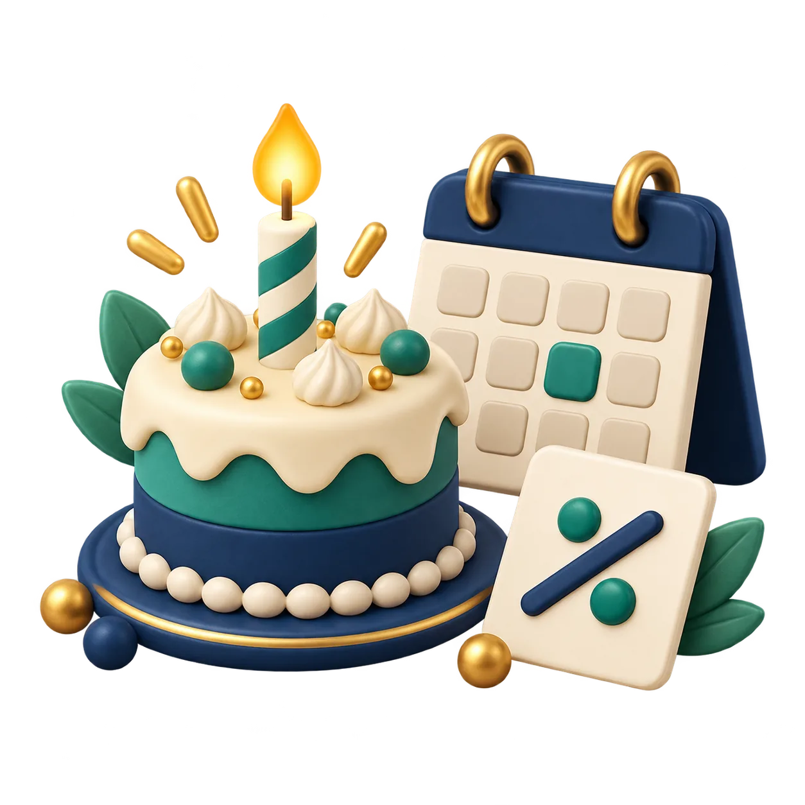

FERRAMENTA GRATUITA
Calculadora de idade e signo
Descubra sua idade exata, signo, dias vividos e quanto falta para o próximo aniversário.

Seu resultado
Como calcular a idade exata
A ferramenta compara sua data de nascimento com a data atual e mostra a idade em anos, meses e dias. Também informa o signo associado à data, quantos dias faltam para o próximo aniversário e uma estimativa de quantos dias você já viveu.
Como usar
Selecione sua data de nascimento e clique em Calcular minha idade. A ferramenta considera o calendário para ajustar meses com quantidades diferentes de dias.
Exemplo
Uma pessoa nascida em 10 de março de 2000 terá sua idade calculada de acordo com o dia atual, e não apenas pela diferença entre os anos.
Dúvidas frequentes
A calculadora conta meses e dias também?
Sim. O resultado mostra anos completos, meses adicionais e dias.
O signo é calculado pela data de nascimento?
Sim, usando as faixas tradicionais dos signos do zodíaco ocidental.
Para outras contagens de tempo, use também a calculadora de diferença entre datas e o conversor de fuso horário.
Calculadoras relacionadas
Você também pode usar Calculadora de Diferença entre Datas e Dias Úteis, Calculadora de IMC Online: Peso e Altura e Conversor de Fuso Horário entre Cidades.